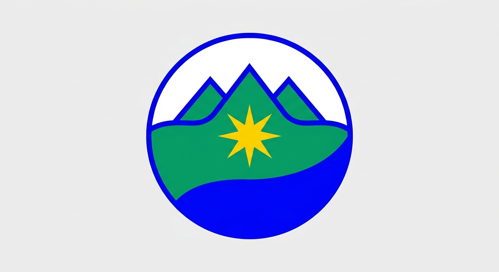
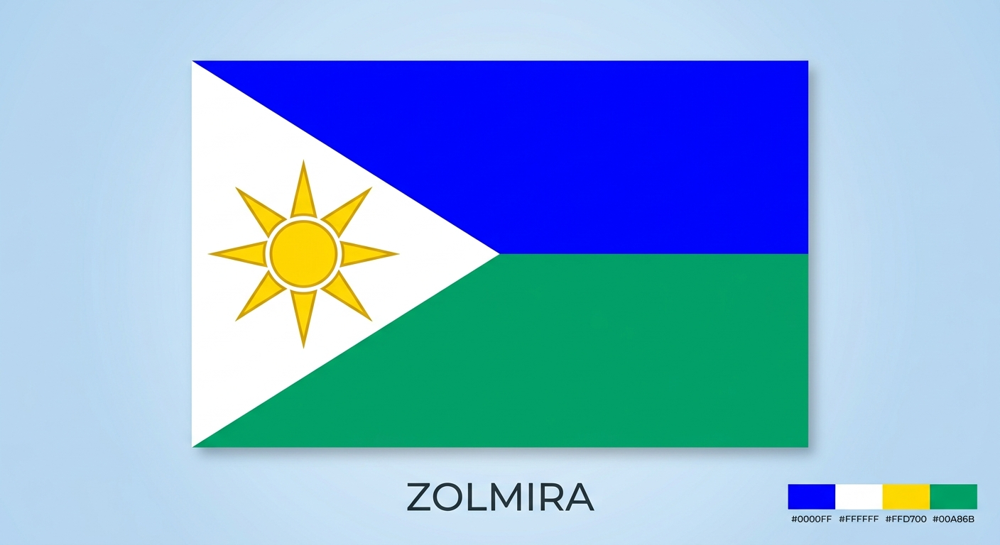
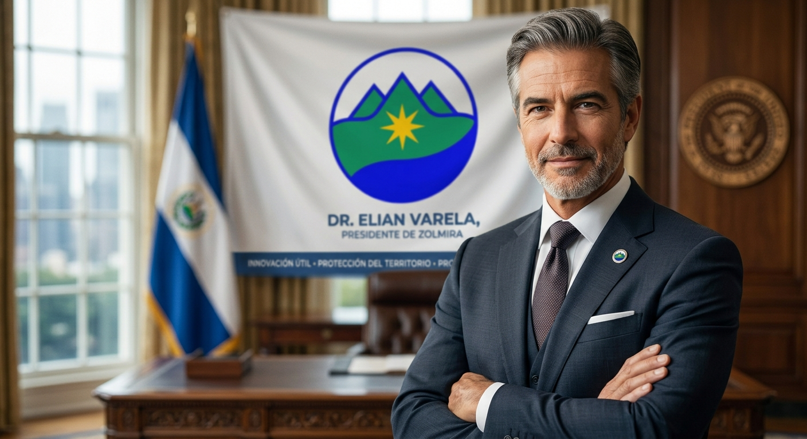

6,8%
↑ 1,2% este año (Sector Mixto)

✦'"> REPÚBLICA DE ZOLMIRAUna nación donde la fuerza emprendedora del sector privado y la visión garante del Estado convergen para generar riqueza sostenible, innovación científica y bienestar social compartido.
Zolmira no es un sistema de libre mercado absoluto (capitalismo puro) ni una economía centralizada (socialismo puro). Es una Economía Social y Ecológica de Mercado que aprovecha lo mejor de ambos mundos.
El Estado actúa como rector estratégico, salvaguardando bienes públicos esenciales, soberanía hídrica-energética y equidad social.
El motor productivo impulsado por la libre empresa, la competencia leal, los precios de mercado y la inversión nacional y extranjera.
Proyectos de gran escala donde el Estado financia infraestructura y riesgo inicial, mientras empresas privadas aportan eficiencia operativa.
Las preferencias y el poder adquisitivo de los consumidores determinan la producción de alimentos gourmet, software, entretenimiento, electrodomésticos y servicios comerciales.
El Estado planifica y produce bienes preferentes y estratégicos que el mercado desatendería: infraestructura hídrica, redes eléctricas limpias, salud hospitalaria universal y educación cuántica.
Las empresas compiten entre sí para optimizar costos mediante tecnología, automatización, robótica y métodos de agricultura regenerativa.
El Estado establece las reglas obligatorias del juego: ley de "Huella de Carbono Cero", estándares de salario digno vital, horarios laborales justos y reciclaje de ciclo cerrado.
Los bienes y servicios privados se distribuyen a quienes pueden pagarlos según sus ingresos, incentivando el talento, el esfuerzo individual y la inversión.
El Estado redistribuye la riqueza mediante impuestos progresivos para que ningún ciudadano carezca de salud, nutrición básica, educación de alta calidad, agua potable y pensión.
Gestiona los complejos hidroeléctricos de Las Cumbres y garantiza tarifas energéticas accesibles y limpias para toda la industria y los hogares.
Líder multinacional privada en sintetización de biofertilizantes y paneles solares flexibles, fundada por emprendedores de la región Solaria.
51% capital estatal (vías férreas y estaciones) y 49% operadores privados (trenes magnéticos de carga y pasajeros de alta velocidad).
Emite el Solmir (Ɀ), controla la política monetaria y custodia las reservas de oro y certificados de créditos de carbono de la nación.
Federación de más de 4.000 agricultores independientes que exportan café orgánico y frutas bio-certificadas a mercados globales.
Laboratorio cofinanciado entre el Ministerio de Salud y farmacéuticas privadas para producir vacunas y medicamentos genéricos de costo cero.
Despliega cada punto para repasar los argumentos económicos más sólidos sobre Zolmira:

BANDERA DE ZOLMIRAEl escudo de Zolmira condensa la geografía productiva y los sectores que sostienen la economía de la República en un solo emblema.
Sede de los mayores embalses y plantas de ENERZOL. Produce el 60% de la electricidad nacional y alberga los centros de investigación criogénica y climática del Estado.

Economista egresado del Instituto Tecnológico de Solaria y Doctor en Políticas Públicas. Su gestión se enfoca en el fortalecimiento de la libre competencia, la solvencia fiscal, la inversión en ciencia y la erradicación de la pobreza extrema mediante la economía mixta equilibrada.
¿Tienes dudas sobre cómo registrar una empresa en Zolmira, postular a un fondo de innovación o solicitar datos macroeconómicos para tu estudio o exposición? Escríbenos.